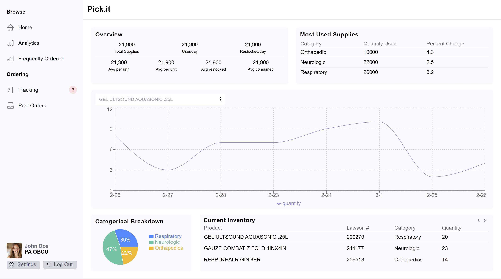
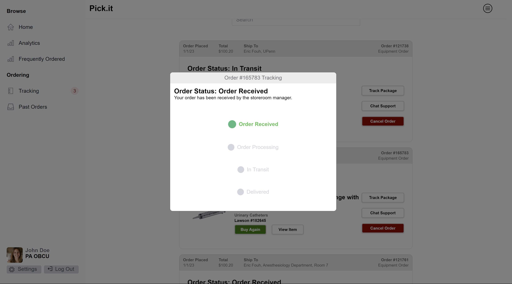
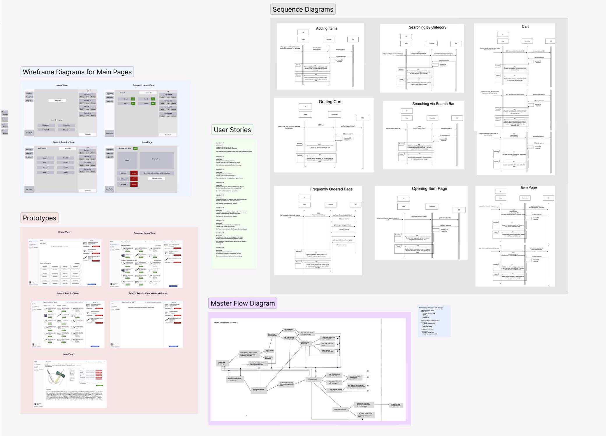
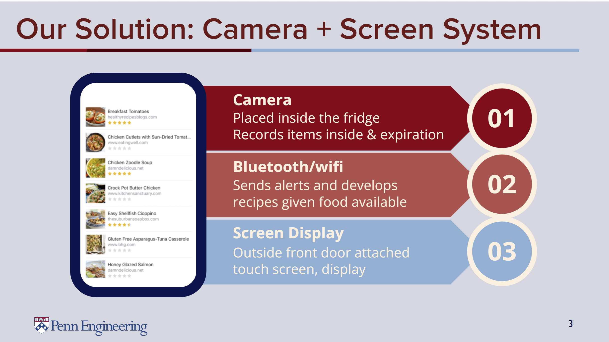

John Briggs
computer engineering - university of pennsylvania
resume | linkedin | github | jjhbriggs@gmail.com
Hey, I'm John!
I am pursuing a BSE in Computer Engineering (and minor in Math) at the University of Pennsylvania.
I have strong technical skills in Python, C / C++, Javascript, and a variety of other languages—
and am particularly experienced with artificial intelligence, applied machine learning, and full stack development.
I will be employed at Meta as a Software Engineer upon graduation.
IMC PROSPERITY 2
Python
2024
Top 50 of over 10,000 teams in 17 day global trading challenge including both algorithmic and manual trading (IMC Prosperity 2).
Algorithmic trading included assets emulating equities, options, commodities, and more. Manual trading included probability and game theory challenges.
- Developed profitable algorithmic models including Black-Scholes pricing to trade on implied volatilities of derivatives, multi-asset pairs trading, cross-market arbitrage, market making on ARIMA price predictions, etc.
- Built local backtester and exchange (including simulated market makers and takers) to test strategies on historical and simulated asset spreads (generated through Monte-Carlo simulations) and emulate behavior of competition exchange
Algorithmic trading included assets emulating equities, options, commodities, and more. Manual trading included probability and game theory challenges.
- Developed profitable algorithmic models including Black-Scholes pricing to trade on implied volatilities of derivatives, multi-asset pairs trading, cross-market arbitrage, market making on ARIMA price predictions, etc.
- Built local backtester and exchange (including simulated market makers and takers) to test strategies on historical and simulated asset spreads (generated through Monte-Carlo simulations) and emulate behavior of competition exchange
Python
SEARCH ENGINE
Java
2024
Developed a Search Engine from scratch in Java.
- Included static & dynamic HTTPS servers, in-memory & persistent distributed KVS, a distributed analytics engine (capable of RDD & PairRDD operations, based on a subset of Apache Spark), distributed web crawling, indexing, and ranking (via PageRank and TF/IDF scoring).
- Scaled to and operated effectively on the live internet (1M+ pages crawled for demo; response time remained quick despite final scoring tables holding 100M+ rows for this set; capable of avoiding spider traps, link farms, etc)
- Included static & dynamic HTTPS servers, in-memory & persistent distributed KVS, a distributed analytics engine (capable of RDD & PairRDD operations, based on a subset of Apache Spark), distributed web crawling, indexing, and ranking (via PageRank and TF/IDF scoring).
- Scaled to and operated effectively on the live internet (1M+ pages crawled for demo; response time remained quick despite final scoring tables holding 100M+ rows for this set; capable of avoiding spider traps, link farms, etc)
Java / AWS
PYTHON COMPILER
Python
2024
Developed a compiler to compile ChocoPy programs to RISC-V SSA (including lexing, parsing & AST Generation, and type checking features).
ChocoPy is a Python subset with support for literals, identifiers, variable definitions & declarations, function prototypes and definitions, control flow, statements, lists & index expressions, arithmetic & comparison operators, logical & conditional operators, parenthesized expressions, and other features.
ChocoPy is a Python subset with support for literals, identifiers, variable definitions & declarations, function prototypes and definitions, control flow, statements, lists & index expressions, arithmetic & comparison operators, logical & conditional operators, parenthesized expressions, and other features.
Python / MLIR
NEUROCAAS
Python / AWS
2020-2023
NeuroCAAS is an open-source scientific resource that uses cloud resources to run powerful modern data analyses.
NeuroCAAS packages these analyses into fully portable descriptions called blueprints, which can then be deployed to analyze data on demand and automatically.
Developed by the Cunningham Group at Columbia University, my primary contributions involved the following:
- Developed the full stack web interface of NeuroCAAS, an online neuroscience analysis platform, using Python (Django), AWS (EC2, S3, IAM, CloudFormation, STS), and Javascript
- Created an identity and access management system to support thousands of users and research groups
- Improved user deployment time from days to seconds by automating AWS resource deployment and optimizing backend performance; implemented a CI pipeline and wrote tests with 90% coverage
- Integrated research team’s IaC codebase for analyses; streamlined execution of 20+ detection, tracking, deep learning, and other algorithms by adding new features such as an embedded configuration templates
Publication: T. Abe, I. Kinsella, S. Saxena, E. K. Buchanan, J. Couto, J. Briggs, S. L. Kitt, R. Glassman, J. Zhou, L. Paninski, J. P. Cunningham, "Neuroscience Cloud Analysis As a Service: An open-source platform for scalable, reproducible data analysis." Neuron, Volume 110, Issue 17, 2022, https://doi.org/10.1016/j.neuron.2022.06.018.
NeuroCAAS packages these analyses into fully portable descriptions called blueprints, which can then be deployed to analyze data on demand and automatically.
Developed by the Cunningham Group at Columbia University, my primary contributions involved the following:
- Developed the full stack web interface of NeuroCAAS, an online neuroscience analysis platform, using Python (Django), AWS (EC2, S3, IAM, CloudFormation, STS), and Javascript
- Created an identity and access management system to support thousands of users and research groups
- Improved user deployment time from days to seconds by automating AWS resource deployment and optimizing backend performance; implemented a CI pipeline and wrote tests with 90% coverage
- Integrated research team’s IaC codebase for analyses; streamlined execution of 20+ detection, tracking, deep learning, and other algorithms by adding new features such as an embedded configuration templates
Publication: T. Abe, I. Kinsella, S. Saxena, E. K. Buchanan, J. Couto, J. Briggs, S. L. Kitt, R. Glassman, J. Zhou, L. Paninski, J. P. Cunningham, "Neuroscience Cloud Analysis As a Service: An open-source platform for scalable, reproducible data analysis." Neuron, Volume 110, Issue 17, 2022, https://doi.org/10.1016/j.neuron.2022.06.018.


Python, Django, AWS (EC2, S3, IAM, CloudFormation), Javascript, HTML5/CSS
PICK.IT SUPPLIES
React / MongoDB
2023
Developed prototype website and mobile app to manage medical supplies for divisions within the University of Pennsylvania hospital system.
Features include real-time delivery tracking, inventory management, user authentication, and analytics dashboards: resulting in a more efficient and transparent supply chain process.
Collaborated with teammates and clients using Agile methodologies to design and implement deliverables.
Features include real-time delivery tracking, inventory management, user authentication, and analytics dashboards: resulting in a more efficient and transparent supply chain process.
Collaborated with teammates and clients using Agile methodologies to design and implement deliverables.



Javascript, React / React Native, MongoDB, Node.js, Express.js
I-WILDCAM CONTEST
Python / PyTorch
2023
Built and tuned ensemble of custom CNN regressor with Microsoft MegaDetector to count animals in sparse temporal samples from camera traps (to assist with conservation).
Trained CNN regressor using transfer learning on Resnet152 with modified layers to address MegaDetector weaknesses.
Engineered new datasets to resolve distribution disparities between competition train and test datasets.
Achieved a MAE of 0.254, a score equivalent to top 5 in the iWildCam 2022 Kaggle Competition and an improvement over the iWildCam 2021 winner (0.264 MAE).
Check out a more detailed report of our work here.
Trained CNN regressor using transfer learning on Resnet152 with modified layers to address MegaDetector weaknesses.
Engineered new datasets to resolve distribution disparities between competition train and test datasets.
Achieved a MAE of 0.254, a score equivalent to top 5 in the iWildCam 2022 Kaggle Competition and an improvement over the iWildCam 2021 winner (0.264 MAE).
Check out a more detailed report of our work here.


Python, PyTorch, AWS SageMaker
FRIDGEVISION
C / Python
2023
Created a smart fridge add-on to track fridge inventory and expirations through a computer vision system.
Runs on a Raspberry Pi and interfaces with an ATMega328p for maintaining state in low power.
Used YOLOv8 detections with a DeepSORT (Wojke et al., 2018) implementation to leverage a Kalman Filter to reduce identity switching and flickering, ensuring food is reliably tracked upon entering or exiting.
Runs on a Raspberry Pi and interfaces with an ATMega328p for maintaining state in low power.
Used YOLOv8 detections with a DeepSORT (Wojke et al., 2018) implementation to leverage a Kalman Filter to reduce identity switching and flickering, ensuring food is reliably tracked upon entering or exiting.

C, Python, PyTorch, Raspberry Pi
PENNOS
C / Linux
2022
Developed an operating system from scratch in bare C with a partner. Complete with FAT file system, UNIX-style shell, and kernel & scheduler (partner's contribution).
C / Docker / Linux
SEARCH & RESCUE UAV
C++ / ROS
2021
Designed a low-cost UAV platform with ROS for search and rescue assistance,
which avoids obstacles and navigates complex unmapped terrain using SLAM techniques, to ensure operation in any environment.
Obstacle avoidance is implemented using the 3DVFH* algorithm (T. Baumann, 2018).
The platform was simulated in Gazebo and deployed on custom quadcopter hardware.
Our vision sensors included an Intel RealSense D455 stereo camera for environment perception and mapping, and an Intel RealSense T265 tracking camera for auxiliary localization in unreliable GPS coverage.
More details about my research and approach can be found here
which avoids obstacles and navigates complex unmapped terrain using SLAM techniques, to ensure operation in any environment.
Obstacle avoidance is implemented using the 3DVFH* algorithm (T. Baumann, 2018).
The platform was simulated in Gazebo and deployed on custom quadcopter hardware.
Our vision sensors included an Intel RealSense D455 stereo camera for environment perception and mapping, and an Intel RealSense T265 tracking camera for auxiliary localization in unreliable GPS coverage.
More details about my research and approach can be found here

C++, ROS, Gazebo, PX4, Intel Realsense
HEADCOUNT
Python / PyTorch
2021
Implemented Fast R-CNN with PyTorch to improve fire safety in public buildings.
Provides detections of potential victims and accurate crowd headcounts within different parts of a building through an online dashboard built on Google Cloud,
ensuring more effective evacuations and improved jfighter response
Provides detections of potential victims and accurate crowd headcounts within different parts of a building through an online dashboard built on Google Cloud,
ensuring more effective evacuations and improved jfighter response

Python, PyTorch, Flask, Google Cloud, Raspberry Pi
PENNAPPS MUSIC
Javascript / React Native
2021
Built a MERN stack app for PennApps XXII: "... a novel music app intended to help address centralization in the music industry by directly connecting listeners and artists."
A full description is available on Devpost.
A full description is available on Devpost.


Javascript, React Native, MongoDB, Typescript, Node.js, Express.js
NEURAL NET. NAVIGATION
Python / Tensorflow
2020
Created a neural network powered vehicle navigation system in Tensorflow, designed to make control predictions based on a low resolution image feed (from PiCam).
This model was deployed on a custom ~1/12 scale car, controlled by a Raspberry Pi.
This model was deployed on a custom ~1/12 scale car, controlled by a Raspberry Pi.